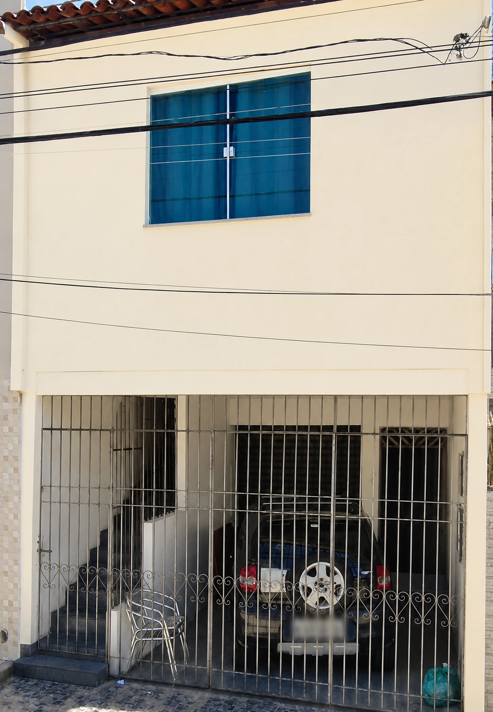

Imóveis na planta
Apresentação de lançamentos, comparação de plantas, condições comerciais, subsídios e simulação conforme o perfil do comprador.
Compra planejadaPreparando sua experiência imobiliária
Imóveis na planta, locação urbana, casa de praia no Abaís e suporte documental com atendimento direto de Vera Costa — presencial ou online.
Explore oito empreendimentos organizados em um catálogo digital, com plantas, lazer, localização, ficha técnica e um caminho direto para simulação ou visita.
Imagens ilustrativas e informações transcritas dos materiais comerciais. Valores, disponibilidade, subsídios e condições estão sujeitos à confirmação com a corretora e a incorporadora.
Um espaço amplo e familiar em Estância, a aproximadamente 400 metros da praia, disponível para locação por temporada e também para venda.
Acomodação preparada para momentos em família, com redes, espaço externo, piscina, utensílios e bicicleta disponível. Disponibilidade da temporada deve ser consultada no Airbnb.
Uma orientação pessoal e estratégica para compradores, proprietários, investidores e famílias.
Apresentação de lançamentos, comparação de plantas, condições comerciais, subsídios e simulação conforme o perfil do comprador.
Compra planejadaOrientação clara para quem está começando, desde a análise inicial até a escolha da opção que cabe no orçamento familiar.
Atendimento educativoDivulgação, seleção de interessados e apoio no processo de aluguel de casas, pontos comerciais e imóveis de renda.
Residencial e comercialLocação de casa de praia para famílias e grupos, com consulta de disponibilidade e reserva por plataforma especializada.
Praia do AbaísIntermediação de imóveis com atendimento direto, negociação responsável e comunicação transparente entre as partes.
Decisões segurasApoio em procedimentos cartorários, análise de documentos, contratos e encaminhamento das etapas jurídicas da transação.
Suporte do início ao fimVera Costa realizou sua primeira venda de imóvel em 2010 e, desde então, construiu uma trajetória pautada na confiança, na escuta e no cuidado com cada negociação.
Além da formação como Técnica em Transações Imobiliárias, Vera é formada em Recursos Humanos — uma combinação que une conhecimento do mercado, capacidade de negociação e atenção verdadeira às necessidades de cada pessoa.
A história profissional de Vera nasceu do desejo de orientar pessoas em decisões importantes. A primeira venda, em 2010, marcou o início de uma jornada que cresceu com dedicação, experiência prática e relacionamento próximo com cada cliente.
Os valores de família aparecem na forma de atender: acolher, ouvir, explicar com clareza e tratar cada negociação com a responsabilidade de quem sabe que um imóvel representa segurança, patrimônio e novos começos.

Imagem de referência · imóvel atualmente locadoVera também atua com locações urbanas, incluindo casas, pontos comerciais e propriedades com múltiplas unidades — oferecendo orientação para proprietários e interessados.
O imóvel de referência no Siqueira Campos reúne ponto comercial, garagem e unidades residenciais, demonstrando a experiência com propriedades de uso misto e geração de renda.
Responda à simulação ou solicite uma visita com seus dados e preferências.
Vera avalia o perfil e apresenta imóveis, lançamentos ou caminhos adequados.
Você recebe orientação durante a visita, negociação e documentação.
Rua Paraíba, 362, Siqueira Campos, Aracaju — Sergipe.
O atendimento também pode ser realizado online para simulações, apresentação de imóveis e orientações iniciais.
Inicie uma simulação, agende uma visita ou fale diretamente com Vera Costa.